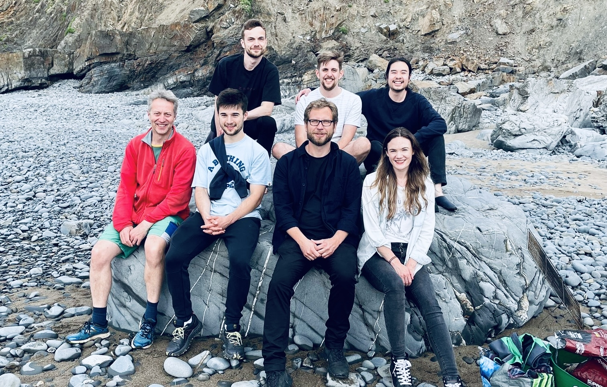

Meet the team#  Current team members# Jack Mellor Jack Mellor Principle investigator Postdocs# Matt Udakis Matt Udakis Senior Research Associate Martynas Dervinis Martynas Dervinis Research Associate PhD Students# Heng Wei Zhu Heng Wei Zhu PhD Student Dan Goodwin Dan Goodwin PhD Student Joe Flanagan Joe Flanagan PhD Student